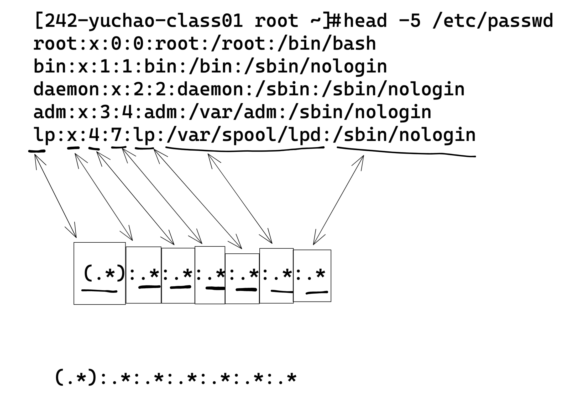

sed练习题
- 写正则，答案不唯一，于超老师的答案作为思路参考
- 自己也尽量想出其他的正则，能够解决该问题
- 100个人可以写出100种可解决问题的不同正则
- 或许你写的正则繁琐些，或许可以再精简，进一步优化，这需要不断的去练习
- 对正则符号的理解越深，必然正则写的会越精简，但是阅读难度也会增加（其他人或许不理解你的符号），当然只要计算机可以认识就行。
sed重点命令、语法
命令格式:
sed [options] [sed-commands] [input-file]
sed [选项] [sed命令] [输入文件]
选项:
-n 取消默认的sed输出,常与sed命令的p连用
-r 使用拓展正则
-i 将修改结果写入文件
命令:
p 输出处理过的行
a append 追加
i insert 插入
d 删除
; 命令分隔;执行多条命令
替换符-前面:
Ns 只替换第几行 如3s###
s 替换模式 s###
c 替换指定行的内容
标识符-后面:
g 全局替换
N 每行第几次匹配的对象
空 只匹配第一次内容
i 忽略大小写匹配
sed查找练习
测试数据
[242-yuchao-class01 root ~]#cat chaoge.log
My name is yuchao. you can call me yuchao.
I teach linux.
I like play computer game.
My qq is 877348180.
My website is http://www.yuchaoit.cn , and another website is https://www.yuchao.top/
I love you.
I hate you,and thank u!
1.查找第2行
[242-yuchao-class01 root ~]#sed '2p' chaoge.log -n
I teach linux.
2.查询第2行到第3行
[242-yuchao-class01 root ~]#sed '2,3p' chaoge.log -n
I teach linux.
I like play computer game.
3.按字包含game关键词的行
[242-yuchao-class01 root ~]#sed '/game/p' chaoge.log -n
I like play computer game.
4.查找以I开头的行
[242-yuchao-class01 root ~]#sed '/^I/p' chaoge.log -n
I teach linux.
I like play computer game.
I love you.
I hate you,and thank u!
5.查找以.结尾的行
[242-yuchao-class01 root ~]#sed '/\.$/p' chaoge.log -n
My name is yuchao. you can call me yuchao.
I teach linux.
I like play computer game.
My qq is 877348180.
I love you.
6.查找linux到qq中间所有的行
[242-yuchao-class01 root ~]#sed '/linux/,/qq/p' chaoge.log -n
I teach linux.
I like play computer game.
My qq is 877348180.
7.查找第3行到http关键词的行
[242-yuchao-class01 root ~]#sed '3,/http/p' chaoge.log -n
I like play computer game.
My qq is 877348180.
My website is http://www.yuchaoit.cn , and another website is https://www.yuchao.top/
8.查找包含love或linux的行，需要用到扩展正则
[242-yuchao-class01 root ~]#sed -rn '/love|linux/p' chaoge.log -n
I teach linux.
I love you.
sed 增加练习
sed增加练习：
1.在第2行后面新添加一行 你是最棒的,奥力给!
[242-yuchao-class01 root ~]#sed '2a 你是最棒的,奥力给!' chaoge.log
My name is yuchao. you can call me yuchao.
I teach linux.
你是最棒的,奥力给!
I like play computer game.
My qq is 877348180.
My website is http://www.yuchaoit.cn , and another website is https://www.yuchao.top/
I love you.
I hate you,and thank u!
2.在第2行前面新添加一行 你是最棒的,奥力给!
[242-yuchao-class01 root ~]#sed '2i 你是最棒的,奥力给!' chaoge.log
My name is yuchao. you can call me yuchao.
你是最棒的,奥力给!
I teach linux.
I like play computer game.
My qq is 877348180.
My website is http://www.yuchaoit.cn , and another website is https://www.yuchao.top/
I love you.
I hate you,and thank u!
3.在第2行后面新添加两行文本
你是最棒的,奥力给!
我帅过吴彦祖，富过李嘉诚!
方法1
[242-yuchao-class01 root ~]#sed '2a 你是最棒的,奥力给!\n我帅过吴彦祖，富过李嘉诚!' chaoge.log
My name is yuchao. you can call me yuchao.
I teach linux.
你是最棒的,奥力给!
我帅过吴彦祖，富过李嘉诚!
I like play computer game.
My qq is 877348180.
My website is http://www.yuchaoit.cn , and another website is https://www.yuchao.top/
I love you.
I hate you,and thank u!
方法2
[242-yuchao-class01 root ~]#sed -e '2a 你是最棒的,奥力给!' -e '2a我帅过吴彦祖，富过李嘉诚!' chaoge.log
My name is yuchao. you can call me yuchao.
I teach linux.
你是最棒的,奥力给!
我帅过吴彦祖，富过李嘉诚!
I like play computer game.
My qq is 877348180.
My website is http://www.yuchaoit.cn , and another website is https://www.yuchao.top/
I love you.
I hate you,and thank u!
方法3，不建议使用
[242-yuchao-class01 root ~]#sed '2a 你是最棒的,奥力给!' chaoge.log |sed '3a我帅过吴彦祖，富过李嘉诚!'
My name is yuchao. you can call me yuchao.
I teach linux.
你是最棒的,奥力给!
我帅过吴彦祖，富过李嘉诚!
I like play computer game.
My qq is 877348180.
My website is http://www.yuchaoit.cn , and another website is https://www.yuchao.top/
I love you.
I hate you,and thank u!
4.在关键词http所在行前面添加一行 天下风云出我辈，一入江湖岁月催
[242-yuchao-class01 root ~]#sed '/http/i 天下风云出我辈，一入江湖岁月催' chaoge.log
My name is yuchao. you can call me yuchao.
I teach linux.
I like play computer game.
My qq is 877348180.
天下风云出我辈，一入江湖岁月催
My website is http://www.yuchaoit.cn , and another website is https://www.yuchao.top/
I love you.
I hate you,and thank u!
sed替换练习
sed替换练习:
命令格式:
sed 's#替换关键词#替换后的内容#g' chaoge.log
测试数据
[242-yuchao-class01 root ~]#cat chaoge.log
My name is yuchao. you can call me yuchao.
I teach linux.
I like play computer game.
My qq is 877348180.
My website is http://www.yuchaoit.cn , and another website is https://www.yuchao.top/
I love you.
I hate you,and thank u!
练习题
1.将yuchao替换为 老于
[242-yuchao-class01 root ~]#sed 's#yuchao#老于#g' chaoge.log
My name is 老于. you can call me 老于.
I teach linux.
I like play computer game.
My qq is 877348180.
My website is http://www.老于it.cn , and another website is https://www.老于.top/
I love you.
I hate you,and thank u!
2.将所有的'I'替换为'我'
[242-yuchao-class01 root ~]#sed 's#I#我#g' chaoge.log
My name is yuchao. you can call me yuchao.
我 teach linux.
我 like play computer game.
My qq is 877348180.
My website is http://www.yuchaoit.cn , and another website is https://www.yuchao.top/
我 love you.
我 hate you,and thank u!
3.只将第一次匹配上的a替换为A
[242-yuchao-class01 root ~]#sed 's#a#A#' chaoge.log
My nAme is yuchao. you can call me yuchao.
I teAch linux.
I like plAy computer game.
My qq is 877348180.
My website is http://www.yuchAoit.cn , and another website is https://www.yuchao.top/
I love you.
I hAte you,and thank u!
4.只将第二次匹配上的a替换为A
[242-yuchao-class01 root ~]#sed 's#a#A#2' chaoge.log
My name is yuchAo. you can call me yuchao.
I teach linux.
I like play computer gAme.
My qq is 877348180.
My website is http://www.yuchaoit.cn , And another website is https://www.yuchao.top/
I love you.
I hate you,And thank u!
5.忽略大小写替换 将my和替换为We
[242-yuchao-class01 root ~]#sed 's#my#We#ig' chaoge.log
We name is yuchao. you can call me yuchao.
I teach linux.
I like play computer game.
We qq is 877348180.
We website is http://www.yuchaoit.cn , and another website is https://www.yuchao.top/
I love you.
I hate you,and thank u!
6.将第1行文本替换为 "当狂风在你耳边呼啸时，你只当它微风拂面；当暴雨在你眼前倾泻时，你只当它屋檐滴水."
方法1，正则
[242-yuchao-class01 root ~]#sed '1 s#^.*#当狂风在你耳边呼啸时，你只当它微风拂面；当暴雨在你眼前倾泻时，你只当它屋檐滴水.#' chaoge.log
当狂风在你耳边呼啸时，你只当它微风拂面；当暴雨在你眼前倾泻时，你只当它屋檐滴水.
I teach linux.
I like play computer game.
My qq is 877348180.
My website is http://www.yuchaoit.cn , and another website is https://www.yuchao.top/
I love you.
I hate you,and thank u!
方法2，固定字符串替换
[242-yuchao-class01 root ~]#sed 's#My name is yuchao. you can call me yuchao.#当狂风在你耳边呼啸时，你只当它微风拂面；当暴雨在你眼前倾泻时，你只当它屋檐滴水.#' chaoge.log
当狂风在你耳边呼啸时，你只当它微风拂面；当暴雨在你眼前倾泻时，你只当它屋檐滴水.
I teach linux.
I like play computer game.
My qq is 877348180.
My website is http://www.yuchaoit.cn , and another website is https://www.yuchao.top/
I love you.
I hate you,and thank u!
方法3，sed的c命令，把选定的行改为新的文本
[242-yuchao-class01 root ~]#sed '1c 当狂风在你耳边呼啸时，你只当它微风拂面；当暴雨在你眼前倾泻时，你只当它屋檐滴水.' chaoge.log
当狂风在你耳边呼啸时，你只当它微风拂面；当暴雨在你眼前倾泻时，你只当它屋檐滴水.
I teach linux.
I like play computer game.
My qq is 877348180.
My website is http://www.yuchaoit.cn , and another website is https://www.yuchao.top/
I love you.
I hate you,and thank u!
sed删除练习
测试数据
[242-yuchao-class01 root ~]#cat chaoge.log
My name is yuchao. you can call me yuchao.
I teach linux.
I like play computer game.
My qq is 877348180.
My website is http://www.yuchaoit.cn
and another website is https://www.yuchao.top/
I love you.
I hate you,and thank u!
练习题
sed删除练习：
1.删除第2行的内容
[242-yuchao-class01 root ~]#sed '2d' chaoge.log
2.删除第2和第5行
[242-yuchao-class01 root ~]#sed '2d;5d' chaoge.log
3.删除第2行到第4行
[242-yuchao-class01 root ~]#sed '2,4d' chaoge.log
4.隔行删除 1～2，表示删除从第一行开始，隔一行删一行，步长为2
[242-yuchao-class01 root ~]#sed '1~2d' chaoge.log
5.删除指定字符串game行之后的2行
[242-yuchao-class01 root ~]#sed '/game/,+2d' chaoge.log
6.取反删除 只保留第1和第2行
[242-yuchao-class01 root ~]#sed '1,2!d' chaoge.log
7.删除包含关键词yuchao的行
[242-yuchao-class01 root ~]#sed '/yuchao/d' chaoge.log
8.删除存在网址的行，如http[s]://www.xxx.com
[242-yuchao-class01 root ~]#sed '/http.*www.*/d' chaoge.log
生产实践题（尽可能多的写出解决答案）
关于正则题，答案不唯一，结果正确都可以。
1.sed提取IP地址
测试数据
[242-yuchao-class01 root ~]#ifconfig ens33
ens33: flags=4163<UP,BROADCAST,RUNNING,MULTICAST> mtu 1500
inet 192.168.0.242 netmask 255.255.255.0 broadcast 192.168.0.255
inet6 fe80::eece:1c38:2b1b:43d3 prefixlen 64 scopeid 0x20<link>
ether 00:0c:29:65:27:85 txqueuelen 1000 (Ethernet)
RX packets 29518 bytes 12461538 (11.8 MiB)
RX errors 0 dropped 323 overruns 0 frame 0
TX packets 4235 bytes 581950 (568.3 KiB)
TX errors 0 dropped 0 overruns 0 carrier 0 collisions 0
可以用测试数据，也可以直接以你自己机器为准，以ifconfig命令结果来提取IP练习
分组提取法
这几种写法类似，只是正则有些许变化，核心在于提取分组内数据
自己至少写出5种分区提取法，来加深对正则的理解
[242-yuchao-class01 root ~]#ifconfig ens33 | sed -rn '2s#.*net\s(.*)\snet.*$#\1#gp'
[242-yuchao-class01 root ~]#ifconfig ens33 | sed -rn '2s#^.*t (.*) net.*#\1#gp'
[242-yuchao-class01 root ~]#ifconfig ens33 | sed -rn '2s#inet (.*)net.*#\1#gp'
[242-yuchao-class01 root ~]#ifconfig ens33| sed -rn '2s#(.*net)\s(.*)\s(net.*)#\2#gp'
[242-yuchao-class01 root ~]#ifconfig ens33| sed -rn '2s#(^.*net)\s(.*)\s(n.*$)#\2#gp'
[242-yuchao-class01 root ~]#ifconfig ens33| sed -rn '2s#(.*t)(.*)(n.*)#\2#gp'
去头去尾法
去掉ip前后的内容
[242-yuchao-class01 root ~]#ifconfig ens33 | sed -rn -e '2s#.*inet##' -e '2s#n.*##p'
彻底去掉空格
[242-yuchao-class01 root ~]#ifconfig ens33 | sed -rn -e '2s#.*inet\s##' -e '2s#n.*##p'
2.修改dns配置文件（尽可能多的办法）
s命令替换法
正则替换法
[242-yuchao-class01 root ~]#sed -r 's#nameserver(.*)#nameserver 223.5.5.5#g' /etc/resolv.conf
# Generated by NetworkManager
nameserver 223.5.5.5
固定字符替换法
[242-yuchao-class01 root ~]#sed '/nameserver/s#114.114.114.114#223.5.5.5#' /etc/resolv.conf
# Generated by NetworkManager
nameserver 223.5.5.5
c命令字符替换法
[242-yuchao-class01 root ~]#sed -r '/name/c nameserver 223.6.6.6' /etc/resolv.conf
# Generated by NetworkManager
nameserver 223.6.6.6
3.修改nginx配置文件
运行用户改为www
默认的nginx运行用户
[242-yuchao-class01 root ~]#grep -i '^user' /etc/nginx/nginx.conf
user nginx;
修改为www
创建用户
[242-yuchao-class01 root ~]#useradd www -s /sbin/nologin -M
修改配置文件
[242-yuchao-class01 root ~]#sed -i '/^user/s#user.*#user www;#' /etc/nginx/nginx.conf
启动nginx，查看进程
[242-yuchao-class01 root ~]#ps -ef|grep nginx |grep -v 'grep'
root 1917 1 0 17:15 ? 00:00:00 nginx: master process nginx
www 1918 1917 0 17:15 ? 00:00:00 nginx: worker process
www 1919 1917 0 17:15 ? 00:00:00 nginx: worker process
4.提取系统中所有用户名
图解提示
每一个字段的正则
.*:.*:.*:.*:.*:.*:(.*)

你可以用如下办法去验证，提取每一个字段的数据
提取登录解释器
[242-yuchao-class01 root ~]#sed -r 's#.*:.*:.*:.*:.*:.*:(.*)#\1#g' /etc/passwd
提取用户名
[242-yuchao-class01 root ~]#sed -r 's#(.*):.*:.*:.*:.*:.*:.*#\1#g' /etc/passwd
先分析/etc/passwd文件的规律，然后根据规律写出提取数据的正则表达式
如该文件以冒号分割
[242-yuchao-class01 root ~]#sed 's#:.*##p' /etc/passwd -n
[242-yuchao-class01 root ~]#sed 's#:x.*##p' /etc/passwd -n
[242-yuchao-class01 root ~]#sed 's#:x:.*##p' /etc/passwd -n
分组提取法
点可以匹配到除了换行以外任意内容
[242-yuchao-class01 root ~]#sed -rn 's#(.):.*#\1#p' /etc/passwd
使用.*的时候，注意考虑匹配字符的边界设定，如:x 这个边界
[242-yuchao-class01 root ~]#sed -rn 's#(.*):x.*#\1#p' /etc/passwd
[242-yuchao-class01 root ~]#sed -rn 's#(^.*):x.*#\1#p' /etc/passwd
匹配除了冒号以外的任意内容
[242-yuchao-class01 root ~]#sed -rn 's#(^[^:]+).*#\1#p' /etc/passwd
仅匹配数字字母法
[242-yuchao-class01 root ~]#sed -rn 's#(^[a-zA-Z0-9]+).*#\1#p' /etc/passwd
[242-yuchao-class01 root ~]#sed -rn 's#([a-zA-Z0-9]+).*#\1#p' /etc/passwd
[242-yuchao-class01 root ~]#sed -rn 's#([a-zA-Z0-9]+):.*#\1#p' /etc/passwd
[242-yuchao-class01 root ~]#sed -rn 's#([a-zA-Z0-9]+):x.*#\1#p' /etc/passwd
5.提取/etc/passwd信息
- 用户名
- uid
- gid
注意先分析规律
[242-yuchao-class01 root ~]#head -5 /etc/passwd
root:x:0:0:root:/root:/bin/bash
bin:x:1:1:bin:/bin:/sbin/nologin
daemon:x:2:2:daemon:/sbin:/sbin/nologin
adm:x:3:4:adm:/var/adm:/sbin/nologin
lp:x:4:7:lp:/var/spool/lpd:/sbin/nologin
分组提取法
sed -r 's#(.*):.*:(.*):(.*):.*:.*:.*#\1,\2,\3#p' /etc/passwd -n
或者
sed -r 's#^(.*):.*:(.*):(.*):.*:.*:.*#\1:\2:\3#g' /etc/passwd
sed -r 's#(.*):x:([0-9]+):([0-9]+):.*#\1,\2,\3#g' /etc/passwd
sed -rn 's#([0-9a-zA-Z]+):.*:([0-9]+):([0-9]+):.*#\1:\2:\3#p' /etc/passwd
6.将/etc/passwd字段调换位置
第一列、最后一列、调换
1.逐步提取每个字段的值
拆解1，先提取出 两列的数据
[242-yuchao-class01 root ~]#sed -r 's#(.*):.*:.*:.*:.*:.*:(.*)#\2:\1#g' /etc/passwd
拆解2，补上中间的内容，搞一个大分组，搞定
[242-yuchao-class01 root ~]#sed -r 's#(.*):(.*:.*:.*:.*:.*):(.*)#\3:\2:\1#g' /etc/passwd
拆解3，答案可以再精简，注意边界，如果实在不理解，就用拆解2的语法
sed -r 's#(.*):(x:.*):(.*)#\3:\2:\1#g' /etc/passwd
2.排除冒号提取
只不过是第一个关于用户名的提取方法变了
[242-yuchao-class01 root ~]#sed -r 's#(^[^:]+):(.*):(.*)#\3:\2:\1#g' /etc/passwd
3.字符范围提取
[242-yuchao-class01 root ~]#sed -r 's#(^[a-zA-Z0-9]+):(x.*):(.*)#\3:\2:\1#g' /etc/passwd
7. 批量修改文件名后缀
源数据
[242-yuchao-class01 root ~]#ll
total 0
-rw-r--r-- 1 root root 0 Apr 10 18:47 1.log
-rw-r--r-- 1 root root 0 Apr 10 18:47 2.log
-rw-r--r-- 1 root root 0 Apr 10 18:47 3.log
-rw-r--r-- 1 root root 0 Apr 10 18:47 4.log
-rw-r--r-- 1 root root 0 Apr 10 18:47 5.log
分组提取文件名，构造新文件名，交给bash解释器执行
1.其实等于是先构造shell语句
[242-yuchao-class01 root ~]#ls | sed -rn 's#(.*).log#mv \1.log \1.txt#p'
mv 1.log 1.txt
mv 2.log 2.txt
mv 3.log 3.txt
mv 4.log 4.txt
mv 5.log 5.txt
2.交给bash执行这样的shell语句
[242-yuchao-class01 root ~]#ls | sed -rn 's#(.*).log#mv \1.log \1.txt#p' | bash
[242-yuchao-class01 root ~]#ls
1.txt 2.txt 3.txt 4.txt 5.txt
8.修改文件内容，且备份文件
修改nginx端口，且做好备份
操作
[242-yuchao-class01 root ~]#sed -i.ori -r 's#listen\s+80;#listen 24444;#g' /etc/nginx/nginx.conf
[242-yuchao-class01 root ~]#
检查
[242-yuchao-class01 root ~]#ls /etc/nginx/nginx.conf*
/etc/nginx/nginx.conf /etc/nginx/nginx.conf.default /etc/nginx/nginx.conf.ori
[242-yuchao-class01 root ~]#grep '24444' /etc/nginx/nginx.conf
listen 24444;
[242-yuchao-class01 root ~]#nginx
[242-yuchao-class01 root ~]#netstat -tnlp|grep nginx
tcp 0 0 0.0.0.0:24444 0.0.0.0:* LISTEN 2165/nginx: master
9.提取nginx日志里的ip
测试数据
149.255.246.18 - - [10/Apr/2022:19:11:41 +0800] "GET / HTTP/1.1" 200 177 "-" "Mozilla/5.0 (Macintosh; Intel Mac OS X 10_11_6) AppleWebKit/601.7.7 (KHTML, like Gecko) Version/9.1.2 Safari/601.7.7" "-"
111.30.182.95 - - [10/Apr/2022:19:12:19 +0800] "GET / HTTP/1.1" 200 177 "-" "DNSPod-Monitor/2.0" "-"
104.192.3.54 - - [10/Apr/2022:19:13:11 +0800] "GET /index.php?option=com_javoice&view=../../../../../../../../../../../../../../../etc/passwd%00 HTTP/1.1" 404 3650 "-" "Mozilla/5.0 (Windows NT 10.0) AppleWebKit/537.36 (KHTML, like Gecko) Chrome/40.0.2214.93 Safari/537.36" "-"
101.89.45.22 - - [10/Apr/2022:19:13:52 +0800] "GET / HTTP/1.1" 200 177 "-" "DNSPod-Monitor/2.0" "-"
104.192.3.54 - - [10/Apr/2022:19:15:05 +0800] "GET /duomiphp/ajax.php?action=addfav&id=1&uid=1%20and%20extractvalue(1,concat_ws(1,1,md5(9999999999))) HTTP/1.1" 404 3650 "-" "Mozilla/5.0 (X11; Ubuntu; Linux x86_64) AppleWebKit/537.36 (KHTML, like Gecko) Chrome/55.0.2919.83 Safari/537.36" "-"
61.241.55.180 - - [10/Apr/2022:19:15:24 +0800] "GET / HTTP/1.1" 200 177 "-" "DNSPod-Monitor/2.0" "-"
111.30.182.61 - - [10/Apr/2022:19:18:20 +0800] "GET / HTTP/1.1" 200 177 "-" "DNSPod-Monitor/2.0" "-"
101.89.45.22 - - [10/Apr/2022:19:19:52 +0800] "GET / HTTP/1.1" 200 177 "-" "DNSPod-Monitor/2.0" "-"
104.192.3.54 - - [10/Apr/2022:19:20:18 +0800] "POST /v2/query HTTP/1.1" 404 3650 "-" "Mozilla/5.0 (Windows NT 10.0; Win64; x64) AppleWebKit/537.36 (KHTML, like Gecko) Chrome/89.0.4389.114 Safari/537.36" "-"
61.241.55.230 - - [10/Apr/2022:19:21:24 +0800] "GET / HTTP/1.1" 200 177 "-" "DNSPod-Monitor/2.0" "-"
104.192.3.54 - - [10/Apr/2022:19:22:32 +0800] "POST /mifs/j_spring_security_check HTTP/1.1" 404 3650 "http://123.206.16.61/mifs/user/login.jsp" "Mozilla/5.0 (Macintosh; Intel Mac OS X 10_10_1) AppleWebKit/537.36 (KHTML, like Gecko) Chrome/41.0.2227.1 Safari/537.36" "-"
111.30.182.61 - - [10/Apr/2022:19:24:19 +0800] "GET / HTTP/1.1" 200 177 "-" "DNSPod-Monitor/2.0" "-"
104.192.3.54 - admin [10/Apr/2022:19:24:19 +0800] "POST /boafrm/formSysCmd HTTP/1.1" 404 3650 "-" "Mozilla/5.0 (X11; Linux x86_64) AppleWebKit/537.36 (KHTML, like Gecko) Chrome/41.0.2227.0 Safari/537.36" "-"
104.192.3.54 - - [10/Apr/2022:19:25:02 +0800] "GET /wp-content/plugins/cherry-plugin/admin/import-export/download-content.php?file=../../../../../wp-config.php HTTP/1.1" 404 3650 "-" "Mozilla/5.0 (Windows NT 5.1) AppleWebKit/537.36 (KHTML, like Gecko) Chrome/35.0.3319.102 Safari/537.36" "-"
101.89.45.22 - - [10/Apr/2022:19:25:51 +0800] "GET / HTTP/1.1" 200 177 "-" "DNSPod-Monitor/2.0" "-"
104.192.3.54 - - [10/Apr/2022:19:26:29 +0800] "GET /maint/modules/endpointcfg/endpointcfg.php?lang=../../../../../../../../etc/passwd%00 HTTP/1.1" 404 3650 "-" "Mozilla/5.0 (Windows NT 5.1) AppleWebKit/537.36 (KHTML, like Gecko) Chrome/36.0.1985.67 Safari/537.36" "-"
61.241.55.180 - - [10/Apr/2022:19:27:23 +0800] "GET / HTTP/1.1" 200 177 "-" "DNSPod-Monitor/2.0" "-"
实践
大部分的日志，可以用如下正则提取ip
[root@yuchao-tx-server ~]# sed -r 's#(.*)\s-\s-.*#\1#g' /var/log/nginx/access.log | sort -n | uniq
但是更严谨的写法如下，直接删掉短横线后续所有内容
[root@yuchao-tx-server ~]# sed -r 's#(-\s.*)##g' /var/log/nginx/access.log
10.sed总结
- 解决办法的正则不唯一，可以多次尝试，找出最完美，精确的正则
- 熟能生巧，正则不是一两天就能搞明白的
- 关于sed的命令要慎重
- 如-n 和p一般结合用
- -i 和 p禁止一起用
- 关于sed的s替换模式，间隔符，请使用#号更靠谱，其他的容易有歧义
- 以及注意是否添加g全局修改
- 是否添加-i参数，修改源文件
s#old_string#new_string#g
s/old_string/new_string/g
s@old_string@new_string@g